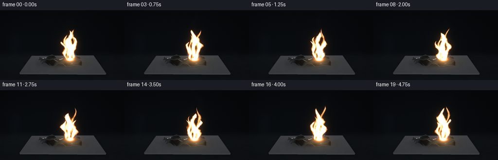
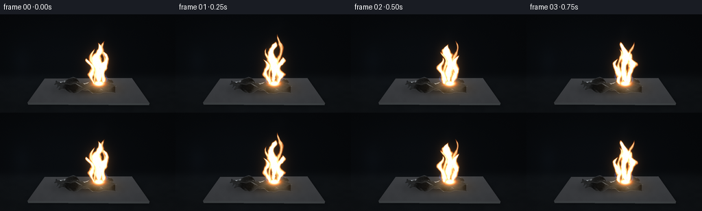

CODING AGENTS AS PIXEL WORLD MODELS
traex/GPT-6.1-Sol · material_0011
点击播放 · 原生 RGB 像素
逐轮保存的候选
回放视频、检查图与代码变化。
每份候选均可单独播放。实际图片检查记录在下方工具轨迹中。
候选 01播放与检查图
点击播放 · 原生 RGB 像素


展开代码变化
--- 上一保存版本
+++ 本次保存版本
@@ -0,0 +1,248 @@
+"""Procedural, supersampled macro photograph of burning aluminum.
+Only numerical geometry, illumination and image compositing are used.
+"""
+from pathlib import Path
+import json
+import numpy as np
+from PIL import Image, ImageDraw, ImageFilter
+from artifact_io import save
+
+ROOT = Path(__file__).resolve().parent
+SPEC = json.loads((ROOT/'task_spec.json').read_text())
+W,H = SPEC['width'], SPEC['height']
+S = 3
+w,h = W*S,H*S
+rng = np.random.default_rng(7613)
+yy,xx = np.mgrid[:h,:w].astype(float)
+X,Y = xx/S,yy/S
+
+def noise(x,y,seed=0):
+ """Continuous lattice noise, stable under motion."""
+ ix=np.floor(x); iy=np.floor(y); fx=x-ix; fy=y-iy
+ fx=fx*fx*(3-2*fx); fy=fy*fy*(3-2*fy)
+ def hash(a,b):
+ return np.mod(np.sin(a*127.1+b*311.7+seed*74.7)*43758.5453,1.)
+ return ((1-fx)*(1-fy)*hash(ix,iy)+fx*(1-fy)*hash(ix+1,iy)
+ +(1-fx)*fy*hash(ix,iy+1)+fx*fy*hash(ix+1,iy+1))
+
+def blur(a,r):
+ # Floating-point blur using fixed-point RGB encoding, enough for glow fields.
+ if a.ndim==2:
+ return np.array(Image.fromarray(np.uint8(np.clip(a,0,1)*255)).filter(ImageFilter.GaussianBlur(r*S))).astype(float)/255
+ return np.array(Image.fromarray(np.uint8(np.clip(a,0,1)*255)).filter(ImageFilter.GaussianBlur(r*S))).astype(float)/255
+
+# A subdued, out-of-focus charcoal laboratory setting, with a slate worktop.
+base=np.zeros((h,w,3),float)
+base[:]=[0.025,0.032,0.040]
+back=(np.exp(-((X-83)/120)**2-((Y-65)/56)**2))
+base+=back[:,:,None]*np.array([.012,.017,.023])
+table = 1/(1+np.exp(-(Y-91)/3))
+rough=noise(X/10,Y/5,4)*.009+noise(X/1.3,Y/.8,18)*.003
+base+=table[:,:,None]*(np.array([.025,.029,.031])+rough[:,:,None])
+# Quiet blurry background areas, rather than distracting recognizable props.
+base+=np.exp(-((X-31)/13)**2-((Y-69)/21)**2)[:,:,None]*np.array([.009,.013,.018])
+
+# Heat-resistant ceramic slab with perspective, edge, subtle grain and shadows.
+maskim=Image.new('L',(w,h)); d=ImageDraw.Draw(maskim)
+tilepoly=[(65,94),(192,93),(218,130),(40,129)]
+d.polygon([(int(a*S),int(b*S)) for a,b in tilepoly],fill=255)
+tile=np.asarray(maskim)/255.
+shadowim=Image.new('L',(w,h));sd=ImageDraw.Draw(shadowim)
+sd.polygon([(int((a+1)*S),int((b+3)*S)) for a,b in tilepoly],fill=255)
+shadow=np.asarray(shadowim.filter(ImageFilter.GaussianBlur(3*S)))/255
+base*=1-.5*shadow[:,:,None]
+edgeim=Image.new('RGB',(w,h));ed=ImageDraw.Draw(edgeim)
+ed.polygon([(40*S,129*S),(218*S,130*S),(217*S,133*S),(41*S,132*S)],fill=(61,65,67))
+edge=np.asarray(edgeim)/255
+em=np.max(edge,axis=2)>0
+base[em]=edge[em]
+ceramic=.225+.036*(1-(Y-95)/45)+.012*noise(X/6,Y/6,54)+.005*noise(X*1.7,Y*1.7,79)
+base=base*(1-tile[:,:,None])+ceramic[:,:,None]*np.array([.92,.95,1.0])*tile[:,:,None]
+# Non-glossy scorch mark around the foil, and contact shadow.
+contact=np.exp(-((X-128)/39)**2-((Y-109)/8.0)**2)*.60
+base*=1-contact[:,:,None]*tile[:,:,None]
+
+# Thin rumpled foil, represented as a small genuinely three dimensional mesh.
+nu,nv=37,21
+us=np.linspace(-1,1,nu); vs=np.linspace(-.78,.78,nv)
+def height(u,v):
+ z=.10 + .085*np.sin(7.1*u+3*v)+.07*np.sin(11*v-3.0*u)
+ z+=.10*np.abs(np.sin(3.8*u+4.4*v+.2))
+ z+=.13*np.exp(-((u+.36)/.26)**2)*np.cos(4*v+.3)**2
+ z+=.24*np.exp(-((u+.84)/.19)**2)*(v+.9)/1.7
+ z+=.14*np.exp(-((u-.83)/.20)**2)*(.8-v)
+ z+=.025*np.sin(22*u-9*v)*np.sin(13*v+u)
+ return z
+verts=[];uvs=[]
+for j,v in enumerate(vs):
+ for i,u in enumerate(us):
+ uu=u+(rng.uniform(-.011,.011) if 0<i<nu-1 else 0)
+ vv=v+(rng.uniform(-.015,.015) if 0<j<nv-1 else rng.uniform(-.022,.022))
+ ax=uu*(1-.095*np.cos(vv*5+.7)**2)+.023*np.sin(vv*17)
+ by=vv+.04*np.sin(uu*8+.5)
+ verts.append([ax,by,height(uu,vv)])
+ uvs.append([uu,vv])
+verts=np.array(verts);uvs=np.array(uvs)
+# A leftward offset leaves exposed silver metal beside the white-hot burn.
+proj=np.stack([125+44*verts[:,0]+5*verts[:,1],111+11.5*verts[:,1]-30*verts[:,2]],axis=1)*S
+tris=[]
+for j in range(nv-1):
+ for i in range(nu-1):
+ a=j*nu+i;b=a+1;c=a+nu;dd=c+1
+ if (i+j)%2: tris.extend([[a,b,c],[b,dd,c]])
+ else: tris.extend([[a,b,dd],[a,dd,c]])
+tris=np.array(tris)
+# Average vertex normals, but retain sharp fold facets.
+face_n=np.cross(verts[tris[:,1]]-verts[tris[:,0]],verts[tris[:,2]]-verts[tris[:,0]])
+face_n/=np.linalg.norm(face_n,axis=1)[:,None]
+vn=np.zeros_like(verts)
+for k in range(3):np.add.at(vn,tris[:,k],face_n)
+vn/=np.linalg.norm(vn,axis=1)[:,None]
+zbuffer=np.full((h,w),-1e5)
+metal=np.zeros((h,w,3)); normals=np.zeros_like(metal); pos=np.zeros_like(metal)
+uvmap=np.zeros((h,w,2)); cover=np.zeros((h,w),bool)
+for ti,tri in enumerate(tris):
+ p=proj[tri]
+ left=max(0,int(np.floor(p[:,0].min())));right=min(w-1,int(np.ceil(p[:,0].max())))
+ top=max(0,int(np.floor(p[:,1].min())));bottom=min(h-1,int(np.ceil(p[:,1].max())))
+ if left>right or top>bottom:continue
+ gy,gx=np.mgrid[top:bottom+1,left:right+1];px=gx+.5;py=gy+.5
+ den=((p[1,1]-p[2,1])*(p[0,0]-p[2,0])+(p[2,0]-p[1,0])*(p[0,1]-p[2,1]))
+ if abs(den)<1e-6:continue
+ a=((p[1,1]-p[2,1])*(px-p[2,0])+(p[2,0]-p[1,0])*(py-p[2,1]))/den
+ b=((p[2,1]-p[0,1])*(px-p[2,0])+(p[0,0]-p[2,0])*(py-p[2,1]))/den
+ c=1-a-b
+ bary=np.stack([a,b,c],axis=-1)
+ wp=bary@verts[tri]
+ depth=wp[:,:,2]*.75-wp[:,:,1]*.45
+ inside=(a>=-.0001)&(b>=-.0001)&(c>=-.0001)&(depth>zbuffer[top:bottom+1,left:right+1])
+ nn=bary@vn[tri]*.70+face_n[ti]*.30
+ nn/=np.maximum(np.linalg.norm(nn,axis=2,keepdims=True),1e-5)
+ for arr,val in ((normals,nn),(pos,wp),(uvmap,bary@uvs[tri])):
+ sub=arr[top:bottom+1,left:right+1];sub[inside]=val[inside]
+ zbuffer[top:bottom+1,left:right+1][inside]=depth[inside]
+ cover[top:bottom+1,left:right+1][inside]=True
+
+view=np.array([.1,-.78,.62]);view/=np.linalg.norm(view)
+light=np.array([-.5,-.3,.8]);light/=np.linalg.norm(light)
+ndv=np.sum(normals*view,axis=2)
+reflection=2*normals*ndv[:,:,None]-view
+# Large diffuse studio sources reflected in creases make bright silver, not rock.
+stripe=np.exp(-((reflection[:,:,1]+.45)/.17)**2-((reflection[:,:,2]-.74)/.34)**2)
+stripe2=np.exp(-((reflection[:,:,0]-.55)/.21)**2-((reflection[:,:,2]-.52)/.52)**2)
+fresnel=.78+.22*(1-np.clip(ndv,0,1))**5
+lum=(.055+.14*np.maximum(0,np.sum(normals*light,axis=2))+.67*stripe+.32*stripe2)*fresnel
+lum+=.06*np.maximum(reflection[:,:,2],0)
+# Fine rolling marks and mottled micro-roughness on the silvery surface.
+mt=(noise(uvmap[:,:,0]*43,uvmap[:,:,1]*34,96)-.5)*.022
+mt+=.006*np.sin(uvmap[:,:,0]*900+uvmap[:,:,1]*30)
+metal=(lum+mt)[:,:,None]*np.array([.94,.975,1.0])
+# Crisp thin bright boundary catches on the flattened foil edge.
+cim=Image.fromarray(cover.astype(np.uint8)*255)
+eroded=np.array(cim.filter(ImageFilter.MinFilter(3)))>0
+rim=cover&~eroded
+metal[rim]=metal[rim]*.75+np.array([.11,.12,.135])
+# Grey, friable oxide right at the reacting tip, not black carbon.
+oxide=np.exp(-((X-144)/10.7)**2-((Y-103)/6.1)**2)
+grain=noise(X*1.8,Y*1.8,61)
+metal=metal*(1-oxide[:,:,None]*.76)+oxide[:,:,None]*(.23+.13*grain[:,:,None])*np.array([1.0,.96,.89])
+base[cover]=metal[cover]
+
+# Pre-sampled particle trajectories; tiny incandescent ejecta drift up naturally.
+prng=np.random.default_rng(19)
+particles=[]
+for j in range(36):
+ particles.append((prng.uniform(-1,5.2),prng.uniform(.35,.95),prng.uniform(-16,17),prng.uniform(30,61),prng.uniform(.22,.55)))
+
+frames=[]
+for fi in range(SPEC['frames']):
+ t=fi/SPEC['fps']
+ flick=.96+.065*np.sin(t*13.1)+.045*np.sin(t*22.7+.9)
+ scene=base.copy()
+ # Flame's real local illumination: pooling on ceramic and reflecting in foil.
+ irradiance=np.exp(-((X-144)/28)**2-((Y-108)/12)**2)*tile
+ scene+=irradiance[:,:,None]*np.array([.175,.119,.052])*flick
+ metalheat=np.exp(-((X-142)/20)**2-((Y-101)/15)**2)*cover
+ facing=np.clip(normals[:,:,2]*.6+normals[:,:,0]*.35+.25,0,1)
+ scene+=metalheat[:,:,None]*(.085+.10*facing[:,:,None])*np.array([1.0,.80,.47])*flick
+ # Fine white smoke behind the flame; smooth, advected and deliberately faint.
+ rise=(98-Y)/85
+ sx=145+7*np.sin(rise*6.3-t*.9)+7*rise
+ sw=3+7*np.clip(rise,0,1)
+ smok=np.exp(-((X-sx)/sw)**2)*np.clip(rise,0,1)*np.clip((1.18-rise)*3,0,1)
+ smok*=noise(X/12-t*.7,Y/13+t*2.9,78)*.035
+ scene=scene*(1-smok[:,:,None])+smok[:,:,None]*np.array([.39,.42,.45])
+ # Independent turbulent tongues sharing one steady white-hot reaction zone.
+ n1=noise(X/7.5+t*.6,Y/9+t*4.2,2)
+ n2=noise(X/3.2-t*.8,Y/4+t*8.4,16)
+ n3=noise(X/1.4+t*1.4,Y/2.4+t*11,93)
+ tongues=[(143.7,101,60,9.1,1.0,-2.0),
+ (149.0,102,44,7.0,.85,4.5),
+ (136.5,103,39,5.4,.74,-6.7),
+ (147.2,102,67,3.5,.40,5.6),
+ (139.3,102,51,3.6,.5,-5.0)]
+ field=np.zeros((h,w))
+ for k,(bx,by,leng,width,strength,drift) in enumerate(tongues):
+ leng*=1+.072*np.sin(t*8.4+k*1.8)+.040*np.sin(t*17.4+k)
+ q=(by-Y)/leng
+ qc=np.clip(q,0,1)
+ center=bx+drift*qc+(1+3.5*qc)*np.sin(qc*9.2-t*5.7+k*1.1)
+ # Tapered fluid sheets, asymmetry and ragged turbulent tips.
+ wid=width*(np.sin(np.pi*qc)**.73)*(.84+.25*np.sin(qc*13+t*8+k))+.9*(1-qc)
+ radial=np.abs(X-center)/(wid+.3)
+ perturb=(n1-.5)*.61+(n2-.5)*.34+(n3-.5)*.12
+ dens=np.clip((1-radial+perturb)*1.9,0,1.6)*np.clip((1-q)*12,0,1)*np.clip(q*10+.28,0,1)
+ dens*=((q>=-.025)&(q<1.04))
+ field=np.maximum(field,dens*strength)
+ # Hot metal core spreads along the foil's fold under the flame.
+ root=np.exp(-((X-144)/7.5)**2-((Y-101.2)/3.7)**2)*1.35
+ field=np.maximum(field,root)
+ # Low blue-violet boundary layer around the reacting aluminum.
+ bq=np.clip((103-Y)/22,0,1)
+ bluex=143+2*np.sin(bq*6-t*7)
+ bluewidth=11*np.sin(np.pi*bq)**.55+1
+ blue=np.exp(-((np.abs(X-bluex)-bluewidth)/1.2)**2)*np.clip(bq*8,0,1)*np.clip((1-bq)*5,0,1)
+ blue*=.38*(.6+.4*n1)*((Y>81)&(Y<105))
+ scene+=blue[:,:,None]*np.array([.17,.31,.79])
+ # Color changes continuously from gold filaments to brilliant pale-white core.
+ alpha=np.clip(field*1.9,0,1)
+ hot=np.clip((field-.18)/.69,0,1)
+ cool=np.array([1.0,.40,.055]); white=np.array([1.0,.97,.82])
+ color=cool[None,None,:]*(1-hot[:,:,None])+white[None,None,:]*hot[:,:,None]
+ # white-hot aluminum is almost fully white, with only warm thin outer wisps.
+ whitest=np.clip((field-.81)*3.8,0,1)
+ color=color*(1-whitest[:,:,None])+np.array([1.0,1.0,.975])*whitest[:,:,None]
+ scene=scene*(1-alpha[:,:,None])+color*alpha[:,:,None]
+ # Optical bloom, predominantly warm-white, not an artificial outline.
+ energy=np.clip((field-.25)*1.35,0,1)
+ glownear=blur(energy,1.9); glowwide=blur(energy,6.5); glowfar=blur(energy,14)
+ scene+=glownear[:,:,None]*np.array([.21,.14,.075])
+ scene+=glowwide[:,:,None]*np.array([.28,.17,.07])
+ scene+=glowfar[:,:,None]*np.array([.17,.085,.034])
+ # A small number of fine bright particles with short upwards motion traces.
+ pim=Image.new('RGB',(w,h));pd=ImageDraw.Draw(pim)
+ for birth,life,vx,vy,radius in particles:
+ age=t-birth
+ if 0<age<life:
+ px=143+vx*age+1.6*np.sin(age*5+birth)
+ py=100-vy*age+8*age*age
+ bright=np.sin(np.pi*age/life)**.5
+ col=(int(255*bright),int(228*bright),int(165*bright))
+ rr=radius*S
+ pd.ellipse((px*S-rr,py*S-rr,px*S+rr,py*S+rr),fill=col)
+ if life>.65:
+ pd.line((px*S,py*S,(px-vx*.025)*S,(py+vy*.025)*S),fill=col,width=1)
+ spark=np.array(pim)/255.
+ scene+=spark+blur(spark,1.3)*.45
+ # Very gentle photographic vignette and fine sensor texture.
+ vign=1-.14*((X-132)/160)**2-.11*((Y-83)/115)**2
+ scene*=vign[:,:,None]
+ # Compress highlights without dulling the brilliant white chemical flame.
+ scene=np.clip(scene,0,1)
+ rgb=np.uint8(np.clip(scene*255+rng.normal(0,.50,(h,w,1)),0,255))
+ out=Image.fromarray(rgb).resize((W,H),Image.Resampling.LANCZOS)
+ frames.append(np.array(out))
+
+frames=np.stack(frames).astype(np.uint8)
+save(frames,ROOT)
+print('Saved',frames.shape,'RGB frames into',ROOT)
可观测工具轨迹
实际执行的命令与返回图片。
命令 1exit 0
/bin/bash -lc 'ls -la && cat prompt.txt && cat GENERATION_RULES.md && cat task_spec.json'
命令 2exit 0
/bin/bash -lc "cat artifact_io.py && python - <<'PY'
import numpy, PIL
print('numpy',numpy.__version__)
PY"命令 3exit 0
/bin/bash -lc "python - <<'PY' import scipy print(scipy.__version__) PY"
命令 4exit 0
/bin/bash -lc "cat > generate.py <<'PY'
\"\"\"Procedural, supersampled macro photograph of burning aluminum.
Only numerical geometry, illumination and image compositing are used.
\"\"\"
from pathlib import Path
import json
import numpy as np
from PIL import Image, ImageDraw, ImageFilter
from artifact_io import save
ROOT = Path(__file__).resolve().parent
SPEC = json.loads((ROOT/'task_spec.json').read_text())
W,H = SPEC['width'], SPEC['height']
S = 3
w,h = W*S,H*S
rng = np.random.default_rng(7613)
yy,xx = np.mgrid[:h,:w].astype(float)
X,Y = xx/S,yy/S
def noise(x,y,seed=0):
\"\"\"Continuous lattice noise, stable under motion.\"\"\"
ix=np.floor(x); iy=np.floor(y); fx=x-ix; fy=y-iy
fx=fx*fx*(3-2*fx); fy=fy*fy*(3-2*fy)
def hash(a,b):
return np.mod(np.sin(a*127.1+b*311.7+seed*74.7)*43758.5453,1.)
return ((1-fx)*(1-fy)*hash(ix,iy)+fx*(1-fy)*hash(ix+1,iy)
+(1-fx)*fy*hash(ix,iy+1)+fx*fy*hash(ix+1,iy+1))
def blur(a,r):
# Floating-point blur using fixed-point RGB encoding, enough for glow fields.
if a.ndim==2:
return np.array(Image.fromarray(np.uint8(np.clip(a,0,1)*255)).filter(ImageFilter.GaussianBlur(r*S))).astype(float)/255
return np.array(Image.fromarray(np.uint8(np.clip(a,0,1)*255)).filter(ImageFilter.GaussianBlur(r*S))).astype(float)/255
# A subdued, out-of-focus charcoal laboratory setting, with a slate worktop.
base=np.zeros((h,w,3),float)
base[:]=[0.025,0.032,0.040]
back=(np.exp(-((X-83)/120)**2-((Y-65)/56)**2))
base+=back[:,:,None]*np.array([.012,.017,.023])
table = 1/(1+np.exp(-(Y-91)/3))
rough=noise(X/10,Y/5,4)*.009+noise(X/1.3,Y/.8,18)*.003
base+=table[:,:,None]*(np.array([.025,.029,.031])+rough[:,:,None])
# Quiet blurry background areas, rather than distracting recognizable props.
base+=np.exp(-((X-31)/13)**2-((Y-69)/21)**2)[:,:,None]*np.array([.009,.013,.018])
# Heat-resistant ceramic slab with perspective, edge, subtle grain and shadows.
maskim=Image.new('L',(w,h)); d=ImageDraw.Draw(maskim)
tilepoly=[(65,94),(192,93),(218,130),(40,129)]
d.polygon([(int(a*S),int(b*S)) for a,b in tilepoly],fill=255)
tile=np.asarray(maskim)/255.
shadowim=Image.new('L',(w,h));sd=ImageDraw.Draw(shadowim)
sd.polygon([(int((a+1)*S),int((b+3)*S)) for a,b in tilepoly],fill=255)
shadow=np.asarray(shadowim.filter(ImageFilter.GaussianBlur(3*S)))/255
base*=1-.5*shadow[:,:,None]
edgeim=Image.new('RGB',(w,h));ed=ImageDraw.Draw(edgeim)
ed.polygon([(40*S,129*S),(218*S,130*S),(217*S,133*S),(41*S,132*S)],fill=(61,65,67))
edge=np.asarray(edgeim)/255
em=np.max(edge,axis=2)>0
base[em]=edge[em]
ceramic=.225+.036*(1-(Y-95)/45)+.012*noise(X/6,Y/6,54)+.005*noise(X*1.7,Y*1.7,79)
base=base*(1-tile[:,:,None])+ceramic[:,:,None]*np.array([.92,.95,1.0])*tile[:,:,None]
# Non-glossy scorch mark around the foil, and contact shadow.
contact=np.exp(-((X-128)/39)**2-((Y-109)/8.0)**2)*.60
base*=1-contact[:,:,None]*tile[:,:,None]
# Thin rumpled foil, represented as a small genuinely three dimensional mesh.
nu,nv=37,21
us=np.linspace(-1,1,nu); vs=np.linspace(-.78,.78,nv)
def height(u,v):
z=.10 + .085*np.sin(7.1*u+3*v)+.07*np.sin(11*v-3.0*u)
z+=.10*np.abs(np.sin(3.8*u+4.4*v+.2))
z+=.13*np.exp(-((u+.36)/.26)**2)*np.cos(4*v+.3)**2
z+=.24*np.exp(-((u+.84)/.19)**2)*(v+.9)/1.7
z+=.14*np.exp(-((u-.83)/.20)**2)*(.8-v)
z+=.025*np.sin(22*u-9*v)*np.sin(13*v+u)
return z
verts=[];uvs=[]
for j,v in enumerate(vs):
for i,u in enumerate(us):
uu=u+(rng.uniform(-.011,.011) if 0<i<nu-1 else 0)
vv=v+(rng.uniform(-.015,.015) if 0<j<nv-1 else rng.uniform(-.022,.022))
ax=uu*(1-.095*np.cos(vv*5+.7)**2)+.023*np.sin(vv*17)
by=vv+.04*np.sin(uu*8+.5)
verts.append([ax,by,height(uu,vv)])
uvs.append([uu,vv])
verts=np.array(verts);uvs=np.array(uvs)
# A leftward offset leaves exposed silver metal beside the white-hot burn.
proj=np.stack([125+44*verts[:,0]+5*verts[:,1],111+11.5*verts[:,1]-30*verts[:,2]],axis=1)*S
tris=[]
for j in range(nv-1):
for i in range(nu-1):
a=j*nu+i;b=a+1;c=a+nu;dd=c+1
if (i+j)%2: tris.extend([[a,b,c],[b,dd,c]])
else: tris.extend([[a,b,dd],[a,dd,c]])
tris=np.array(tris)
# Average vertex normals, but retain sharp fold facets.
face_n=np.cross(verts[tris[:,1]]-verts[tris[:,0]],verts[tris[:,2]]-verts[tris[:,0]])
face_n/=np.linalg.norm(face_n,axis=1)[:,None]
vn=np.zeros_like(verts)
for k in range(3):np.add.at(vn,tris[:,k],face_n)
vn/=np.linalg.norm(vn,axis=1)[:,None]
zbuffer=np.full((h,w),-1e5)
metal=np.zeros((h,w,3)); normals=np.zeros_like(metal); pos=np.zeros_like(metal)
uvmap=np.zeros((h,w,2)); cover=np.zeros((h,w),bool)
for ti,tri in enumerate(tris):
p=proj[tri]
left=max(0,int(np.floor(p[:,0].min())));right=min(w-1,int(np.ceil(p[:,0].max())))
top=max(0,int(np.floor(p[:,1].min())));bottom=min(h-1,int(np.ceil(p[:,1].max())))
if left>right or top>bottom:continue
gy,gx=np.mgrid[top:bottom+1,left:right+1];px=gx+.5;py=gy+.5
den=((p[1,1]-p[2,1])*(p[0,0]-p[2,0])+(p[2,0]-p[1,0])*(p[0,1]-p[2,1]))
if abs(den)<1e-6:continue
a=((p[1,1]-p[2,1])*(px-p[2,0])+(p[2,0]-p[1,0])*(py-p[2,1]))/den
b=((p[2,1]-p[0,1])*(px-p[2,0])+(p[0,0]-p[2,0])*(py-p[2,1]))/den
c=1-a-b
bary=np.stack([a,b,c],axis=-1)
wp=bary@verts[tri]
depth=wp[:,:,2]*.75-wp[:,:,1]*.45
inside=(a>=-.0001)&(b>=-.0001)&(c>=-.0001)&(depth>zbuffer[top:bottom+1,left:right+1])
nn=bary@vn[tri]*.70+face_n[ti]*.30
nn/=np.maximum(np.linalg.norm(nn,axis=2,keepdims=True),1e-5)
for arr,val in ((normals,nn),(pos,wp),(uvmap,bary@uvs[tri])):
sub=arr[top:bottom+1,left:right+1];sub[inside]=val[inside]
zbuffer[top:bottom+1,left:right+1][inside]=depth[inside]
cover[top:bottom+1,left:right+1][inside]=True
view=np.array([.1,-.78,.62]);view/=np.linalg.norm(view)
light=np.array([-.5,-.3,.8]);light/=np.linalg.norm(light)
ndv=np.sum(normals*view,axis=2)
reflection=2*normals*ndv[:,:,None]-view
# Large diffuse studio sources reflected in creases make bright silver, not rock.
stripe=np.exp(-((reflection[:,:,1]+.45)/.17)**2-((reflection[:,:,2]-.74)/.34)**2)
stripe2=np.exp(-((reflection[:,:,0]-.55)/.21)**2-((reflection[:,:,2]-.52)/.52)**2)
fresnel=.78+.22*(1-np.clip(ndv,0,1))**5
lum=(.055+.14*np.maximum(0,np.sum(normals*light,axis=2))+.67*stripe+.32*stripe2)*fresnel
lum+=.06*np.maximum(reflection[:,:,2],0)
# Fine rolling marks and mottled micro-roughness on the silvery surface.
mt=(noise(uvmap[:,:,0]*43,uvmap[:,:,1]*34,96)-.5)*.022
mt+=.006*np.sin(uvmap[:,:,0]*900+uvmap[:,:,1]*30)
metal=(lum+mt)[:,:,None]*np.array([.94,.975,1.0])
# Crisp thin bright boundary catches on the flattened foil edge.
cim=Image.fromarray(cover.astype(np.uint8)*255)
eroded=np.array(cim.filter(ImageFilter.MinFilter(3)))>0
rim=cover&~eroded
metal[rim]=metal[rim]*.75+np.array([.11,.12,.135])
# Grey, friable oxide right at the reacting tip, not black carbon.
oxide=np.exp(-((X-144)/10.7)**2-((Y-103)/6.1)**2)
grain=noise(X*1.8,Y*1.8,61)
metal=metal*(1-oxide[:,:,None]*.76)+oxide[:,:,None]*(.23+.13*grain[:,:,None])*np.array([1.0,.96,.89])
base[cover]=metal[cover]
# Pre-sampled particle trajectories; tiny incandescent ejecta drift up naturally.
prng=np.random.default_rng(19)
particles=[]
for j in range(36):
particles.append((prng.uniform(-1,5.2),prng.uniform(.35,.95),prng.uniform(-16,17),prng.uniform(30,61),prng.uniform(.22,.55)))
frames=[]
for fi in range(SPEC['frames']):
t=fi/SPEC['fps']
flick=.96+.065*np.sin(t*13.1)+.045*np.sin(t*22.7+.9)
scene=base.copy()
# Flame's real local illumination: pooling on ceramic and reflecting in foil.
irradiance=np.exp(-((X-144)/28)**2-((Y-108)/12)**2)*tile
scene+=irradiance[:,:,None]*np.array([.175,.119,.052])*flick
metalheat=np.exp(-((X-142)/20)**2-((Y-101)/15)**2)*cover
facing=np.clip(normals[:,:,2]*.6+normals[:,:,0]*.35+.25,0,1)
scene+=metalheat[:,:,None]*(.085+.10*facing[:,:,None])*np.array([1.0,.80,.47])*flick
# Fine white smoke behind the flame; smooth, advected and deliberately faint.
rise=(98-Y)/85
sx=145+7*np.sin(rise*6.3-t*.9)+7*rise
sw=3+7*np.clip(rise,0,1)
smok=np.exp(-((X-sx)/sw)**2)*np.clip(rise,0,1)*np.clip((1.18-rise)*3,0,1)
smok*=noise(X/12-t*.7,Y/13+t*2.9,78)*.035
scene=scene*(1-smok[:,:,None])+smok[:,:,None]*np.array([.39,.42,.45])
# Independent turbulent tongues sharing one steady white-hot reaction zone.
n1=noise(X/7.5+t*.6,Y/9+t*4.2,2)
n2=noise(X/3.2-t*.8,Y/4+t*8.4,16)
n3=noise(X/1.4+t*1.4,Y/2.4+t*11,93)
tongues=[(143.7,101,60,9.1,1.0,-2.0),
(149.0,102,44,7.0,.85,4.5),
(136.5,103,39,5.4,.74,-6.7),
(147.2,102,67,3.5,.40,5.6),
(139.3,102,51,3.6,.5,-5.0)]
field=np.zeros((h,w))
for k,(bx,by,leng,width,strength,drift) in enumerate(tongues):
leng*=1+.072*np.sin(t*8.4+k*1.8)+.040*np.sin(t*17.4+k)
q=(by-Y)/leng
qc=np.clip(q,0,1)
center=bx+drift*qc+(1+3.5*qc)*np.sin(qc*9.2-t*5.7+k*1.1)
# Tapered fluid sheets, asymmetry and ragged turbulent tips.
wid=width*(np.sin(np.pi*qc)**.73)*(.84+.25*np.sin(qc*13+t*8+k))+.9*(1-qc)
radial=np.abs(X-center)/(wid+.3)
perturb=(n1-.5)*.61+(n2-.5)*.34+(n3-.5)*.12
dens=np.clip((1-radial+perturb)*1.9,0,1.6)*np.clip((1-q)*12,0,1)*np.clip(q*10+.28,0,1)
dens*=((q>=-.025)&(q<1.04))
field=np.maximum(field,dens*strength)
# Hot metal core spreads along the foil's fold under the flame.
root=np.exp(-((X-144)/7.5)**2-((Y-101.2)/3.7)**2)*1.35
field=np.maximum(field,root)
# Low blue-violet boundary layer around the reacting aluminum.
bq=np.clip((103-Y)/22,0,1)
bluex=143+2*np.sin(bq*6-t*7)
bluewidth=11*np.sin(np.pi*bq)**.55+1
blue=np.exp(-((np.abs(X-bluex)-bluewidth)/1.2)**2)*np.clip(bq*8,0,1)*np.clip((1-bq)*5,0,1)
blue*=.38*(.6+.4*n1)*((Y>81)&(Y<105))
scene+=blue[:,:,None]*np.array([.17,.31,.79])
# Color changes continuously from gold filaments to brilliant pale-white core.
alpha=np.clip(field*1.9,0,1)
hot=np.clip((field-.18)/.69,0,1)
cool=np.array([1.0,.40,.055]); white=np.array([1.0,.97,.82])
color=cool[None,None,:]*(1-hot[:,:,None])+white[None,None,:]*hot[:,:,None]
# white-hot aluminum is almost fully white, with only warm thin outer wisps.
whitest=np.clip((field-.81)*3.8,0,1)
color=color*(1-whitest[:,:,None])+np.array([1.0,1.0,.975])*whitest[:,:,None]
scene=scene*(1-alpha[:,:,None])+color*alpha[:,:,None]
# Optical bloom, predominantly warm-white, not an artificial outline.
energy=np.clip((field-.25)*1.35,0,1)
glownear=blur(energy,1.9); glowwide=blur(energy,6.5); glowfar=blur(energy,14)
scene+=glownear[:,:,None]*np.array([.21,.14,.075])
scene+=glowwide[:,:,None]*np.array([.28,.17,.07])
scene+=glowfar[:,:,None]*np.array([.17,.085,.034])
# A small number of fine bright particles with short upwards motion traces.
pim=Image.new('RGB',(w,h));pd=ImageDraw.Draw(pim)
for birth,life,vx,vy,radius in particles:
age=t-birth
if 0<age<life:
px=143+vx*age+1.6*np.sin(age*5+birth)
py=100-vy*age+8*age*age
bright=np.sin(np.pi*age/life)**.5
col=(int(255*bright),int(228*bright),int(165*bright))
rr=radius*S
pd.ellipse((px*S-rr,py*S-rr,px*S+rr,py*S+rr),fill=col)
if life>.65:
pd.line((px*S,py*S,(px-vx*.025)*S,(py+vy*.025)*S),fill=col,width=1)
spark=np.array(pim)/255.
scene+=spark+blur(spark,1.3)*.45
# Very gentle photographic vignette and fine sensor texture.
vign=1-.14*((X-132)/160)**2-.11*((Y-83)/115)**2
scene*=vign[:,:,None]
# Compress highlights without dulling the brilliant white chemical flame.
scene=np.clip(scene,0,1)
rgb=np.uint8(np.clip(scene*255+rng.normal(0,.50,(h,w,1)),0,255))
out=Image.fromarray(rgb).resize((W,H),Image.Resampling.LANCZOS)
frames.append(np.array(out))
frames=np.stack(frames).astype(np.uint8)
save(frames,ROOT)
print('Saved',frames.shape,'RGB frames into',ROOT)
PY
python generate.py"命令 5exit 1
/bin/bash -lc "python - <<'PY'
from pathlib import Path
from PIL import Image
import numpy as np
p=Path('.')
fs=sorted((p/'frames').glob('*.png'))
a=np.stack([np.array(Image.open(f)) for f in fs])
assert a.shape==(20,144,256,3) and a.dtype==np.uint8
assert all((p/f).is_file() for f in ['generate.py','pixels.npz','index.html','inspection.png','transition_check.png'])
print('Verified 20 RGB frames and all required artifacts.')
print('Average frame difference:',np.abs(np.diff(a.astype(float),axis=0)).mean())
PY
command -v ffmpeg"保存候选 1 份；完成命令 5 次；可验证图片返回 0 张。原始 API 响应与完整日志保留在本地。